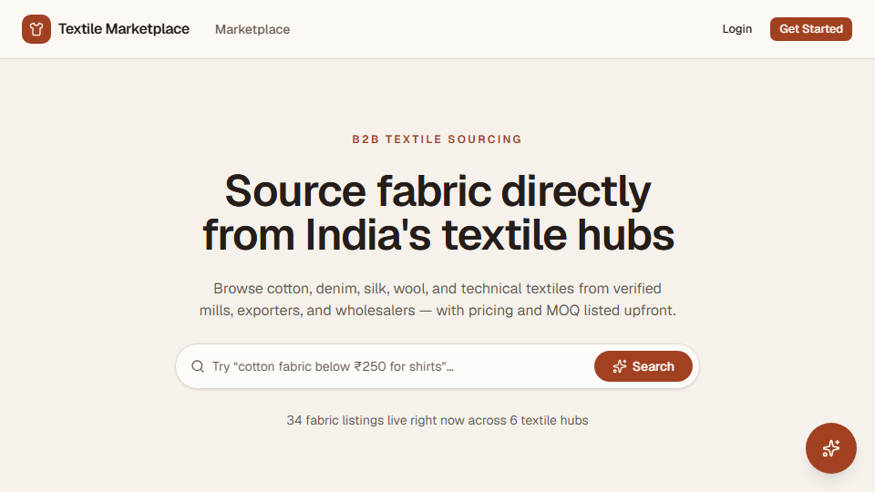

AI B2B Textile
A B2B fabric sourcing marketplace connecting verified suppliers across 6 Indian textile hubs, with transparent MOQ and pricing shown upfront — live today with 34 real listings across 6 categories.

Problem
Textile sourcing in India typically runs through phone-based negotiation with a middleman, with no visible pricing or minimum order quantity until a buyer makes contact. The problem is discovery: how do you let a buyer browse verified suppliers along two independent axes — where they are (hub) and what they make (category) — and see real pricing and MOQ upfront, without forcing a rigid pick-one-first funnel or reducing a B2B sourcing decision to a consumer-e-commerce template with different labels.
Constraints
- Hub (geography) and category (product type) both had to filter the same listing set independently and combinably — neither could be the "primary" axis the other depends on.
- Every category and hub view needed to be a real, addressable page — not client-side-only state that disappears on refresh or can't be shared as a link.
- Pricing and MOQ needed to read as genuinely useful B2B data, not consumer-storefront copy with different field names.
Architecture
Next.js frontend with routed category and hub views · React components for listings and supplier cards · Tailwind CSS for the UI layer · deployed on Vercel.
Key Engineering Decision
Category and hub are modeled as two independent, combinable filters over one listing set — not a hierarchy where you pick a hub before you can see categories, or vice versa. Each supplier profile carries hub, category, MOQ, and price per meter as first-class fields, and category/hub pages use Next.js's file-based routing, so each combination is a real, addressable page rather than client-only state. Live today with 34 fabric listings across 6 categories, spanning suppliers in Surat, Tiruppur, Ludhiana, Ahmedabad, Jaipur, and Mumbai.
Trade-offs
Listings and supplier data are currently seeded, not backed by a real supplier-onboarding flow — the marketplace architecture (routing, filtering, the two-axis data model) is production-shaped, but there's no auth or dashboard yet for a supplier to list themselves. That's the next real engineering problem here, not a small addition.
Lessons Learned
The hardest design problem in a marketplace usually isn't the code — it's the taxonomy. Deciding what a "category" and a "hub" actually mean to a buyer, and making sure every listing fits cleanly into both, had to happen before writing a single component. Getting that wrong would have meant rebuilding the data model, not just the UI.